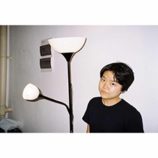
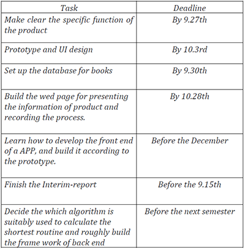
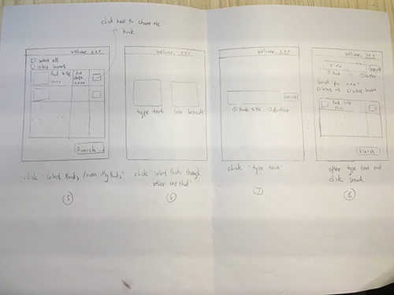
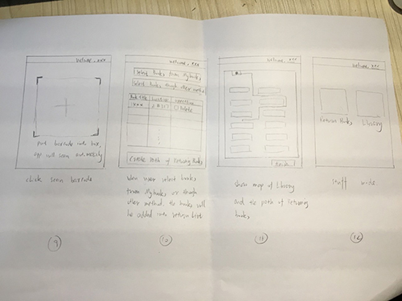
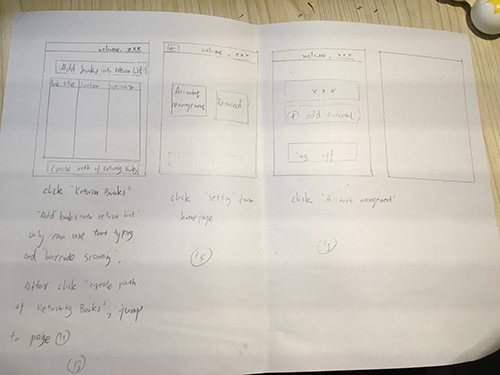
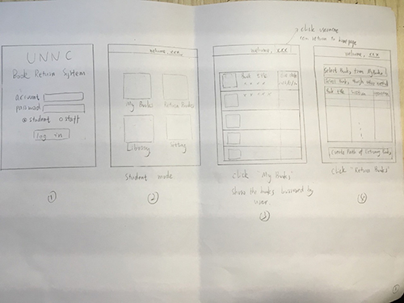

In the school library, it is pretty easy for us to find books
from the bookshelves, while it is very hard to put a specific book back to its original position. This application will provide a better user experience to get and return books.
-->
Best Route
Provide the shortest route to the bookshelves
Easily Book Identify
Text typing & barcode scanning
Reminder
Reminder function, automatic reminder you the due time of the book
Process
Weekly report & Meeting Record
Meeting 1 (Sep 19th 2016)
Recorded by Yiling Yang
Weekly Report 1 (Sep 27th 2016)
Written by Ye Zeng
Meeting 2 (Sep 28th 2016)
Recorded by Yijie Cheng
Meeting 3 (Oct 21st 2016)
Recorded by Shijie Li
Weekly Report 2 (Oct 22nd 2016)
Written by Ye Zeng
Timeline
Here record our process of this project.
Sep 16th 2016
Meet and Greet: as a group
Leave contact information with each other, read the information of the whole project.
Sep 19th 2016
First meeting with supervisor
Make plan and schedules, make sure to set up a website, assign tasks for each person. Understand the topic, do research to compare the IOS and the android system, and which one is better for this project.
Sep 28th 2016
Second meeting with supervisor
Review what have done in last week. Finish the first version of the prototype, and start to set up the website.
Oct 2016
Requirement analysis, finish website and prototyping
By Oct 28th 2016: finish the website, questionnaire investigation, analyse the requirements and finish the prototyping.
TO
Be
Continued!
Our Amazing Team
Information about team members.

Ye Zeng
Team Leader
Die Hu
UI Designer
Yijie Cheng
Yunyi Lei
Yiling Yang
Shijie Li
Contact Us
First meeting with supervisor
Date: 19th September, 2016
Supervisor: Dr. Qian ZHANG
Group Leader: Ye ZENG
Group member present: Die HU, Shijie LI, Yijie CHENG, Yiling YANG, Yunyi LEI
Group member absent: None
Meeting recorder: Yiling YANG
Dr. Qian ZHANG pointed out the function and the purpose of meetings
1. Make plan and schedules for next week.
2. Set up a website:
• Upload weekly reports about what have done in last week.
• Upload meeting records
3. Discussion.
4. Assign tasks for each person.
Hint about this project by Dr. Qian ZHANG
• Three levels of this project, choose one of them:
1. Text typing (easier)
2. Barcode scanning (medium)
3. Book cover recognition (hardest)
• It is unnecessary to input all the books in library. Only hundreds of them are needed to perform demo and implement the basic idea.
• Design library with only 1 floor and all the books in this floor. Also, all the books are in separated shelves. To save the information could use any format, such as 2#6 means 6th row in shelf 2, or the coordinate.
• The start position of the shortest route could be the user’s actual position or a particular position
The plan for this week
1. Compare the IOS and the android system, and which one is better for this project.
2. Compare the languages that may used to this application.
3. Decide an interface of group’s site.
4. Decide a name for this application.
First Week Report
Sep 27th 2016 Written by Ye Zeng
A.Had first meeting with our supervisor Dr.Zhang
i.Discussed the understanding of this project.
ii. Make the requirement specification more detailed
( like the main function of this product and the technique needed in this project)
• Three levels of this project:
1. Text typing (easier)
2. Barcode scanning (medium)
3. Book cover recognition (hardest)
• It is unnecessary to input all the books in library. Only hundreds of them are needed to perform demo and implement the basic idea.
• Design library with only 1 floor and all the books in this floor. Also, all the books are in separated shelves. To save the information could use any format, such as 2#6 means 6th row in shelf 2, or the coordinate.
• The start position of the shortest route could be the user’s actual position or a particular position.
B.Make a rough time schedule for autumn semester

C.Divide the group into three parts which take responsibility of designing UI, building the website and building the front end of the APP
i.Group 1: UI Designing
Member: Die Hu, Yiling Yang
Leader: Die Hu
ii.Group 2: Web building:
Member: Yunyi Lei, Shijie Li
Leader: Yunyi Lei
iii.Group 3: Front end building
Member: Yijie Cheng, Ye Zeng
Leader: Yijie Cheng
Sub-process of inner groups
A.UI designing group
Produce the first version of prototype




B.Web building group
1. Make sure about which server can be used:
(26 September 2016 received email from Dave)
- Linux servers
- We can use the command below to see the new accounts.
- Or visit their home folder by #cd /home and use #ls or #ll command to list out all the folders. #cat /etc/passwd #more /etc/passwd
- Username: Team201605 PWD:UONuon123
2. Technology selection:
Front-end: html+css+JS(jQuery,Boostrap)
Background: PHP+MySQL 3. Requirementsdocumentpreparation:see“Groupsiteinfo.pdf”
Second meeting with supervisor
Date: 28th September, 2016
Supervisor: Dr. Qian ZHANG
Group Leader: Ye ZENG
Group member present: Die HU, Shijie LI, Yijie CHENG, Yiling YANG, Yunyi LEI
Group member absent: None
Meeting recorder: Yijie CHENG
1.Inform our progress to Dr. Qian Zhang
1) Made a rough schedule of our project and decide to finish 60% of it.
2) Divide the group members into three groups:
a. UI design group. Leader: Die HU.
b. Web building group. Leader: Yunyi LEI.
c. Front end group. Leader: Yijie CHENG.
3) Start to review Software Engineering.
4) Finish the first prototype
2. Hint by Dr. Qian Zhang
1) Clear the user requirement before coding.
a. Market research(questionnaire and interview to students and library staffs)
b. Clear the feature of our project.
2) Three subgroups can focus on the market (including market research and UI), front end and back end separately. Three subgroups should communicate with each other.
3) The process to design this app should be like this:
First prototype → market research → second prototype → market research again → final design → start coding
3. Recent plan
1) Design and distribute the questionnaire to students by email and social network. Then according to the result of questionnaire, interview some students.
2) Interview library staffs and know their requirements about this app.
4. Deadline
1) Everyone provide three brief answering questions to interview staffs and five multiple choice questions to ask students.
DDL: 12:00pm 9/30
2) Finish website interface
DDL: 10/10
Third meeting with supervisor
Date: 21st October, 2016
Supervisor: Dr. Qian ZHANG
Group Leader: Ye ZENG
Group member present: Die HU, Shijie LI, Yijie CHENG, Yiling YANG
Group member absent: Yunyi LEI
Meeting recorder: Shijie LI
Meeting Content:
- Show the UI prototypes to Dr. Qian Zhang
- Discuss and confirm the functionality of application
- Website upload
1) Meeting record
2) Weekly report (What group members have done last week and future plan for next week)
3) Meeting minimum (the detail of meeting decision)
- Process of Software Requirements Specification
- Start to design user and system requirements by Yiling Yang and Shijie Li
Confusion and discussion:
1. In the previous design, our group has different ideas:
a) When users borrow books, they need to send their information to administrator, and administrator confirm the information
b) Users can borrow books themselves
Result: The hint by Dr. Qian Zhang: this application is no need to focus on borrow and return books, it should focus on
1) whether the book is borrowed or not
2) activities with in the library
3) shortest path to the books and position of the books.
For the group project, we can design the model of library, database of books ourselves. According to the hint of Dr. Qian Zhang, we overthrow our previous design and decided new functions of the application.
2. We discussed the question is should we need to add a function to check whether the books are on the shelves? When someone take away a book from the shelves, he can use the application to confirm and other one knows this book is unavailable.
Result: We though this idea is infeasible:
1) We cannot sure everyone will use this application
2) We do not think user will take one or two minimums to use this function when they take book, it is not convenient.
Decision:
1. The functions of application:
For Unregistered users: Search books
For Student users: Search books + Remainder + book review (remove QR code scan)
For Library staff: Search books + Organize book data and book reviews + Send announcements
2. Application’s name: Liber (temporary)